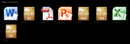

MiniGal Nano
Dieser Artikel wurde für die folgenden Ubuntu-Versionen getestet:
Ubuntu 14.04 Trusty Tahr
Artikel für fortgeschrittene Anwender
Dieser Artikel erfordert mehr Erfahrung im Umgang mit Linux und ist daher nur für fortgeschrittene Benutzer gedacht.
Zum Verständnis dieses Artikels sind folgende Seiten hilfreich:
Nicht nur Musik, auch Bilder sammeln sich durch die Verbreitung digitaler Kameras schnell auf der Festplatte an. Zur Verwaltung gibt es lokale Bildverwaltungen wie F-Spot, Shotwell, digiKam oder gThumb. Was aber, wenn die Bilder auch online betrachtet werden sollen?
Früher hat man selbst eine Bildergalerie in HTML erstellt und diese anschließend via FTP ins Internet kopiert. Obwohl diese Methode ihre Vorteile hat, ist sie relativ zeitaufwendig. Schneller geht es heute mit (kostenlosen) Webdiensten wie beispielsweise Flickr!  , Picasaweb oder vergleichbaren Systemen . Man verliert aber so unter Umständen die Kontrolle über die eigenen Bilder. Wer diese Befürchtungen hegt, setzt sich besser einen eigenen Bilderserver wie Gallery inklusive Datenbank, integrierter Benutzerverwaltung usw. auf.
, Picasaweb oder vergleichbaren Systemen . Man verliert aber so unter Umständen die Kontrolle über die eigenen Bilder. Wer diese Befürchtungen hegt, setzt sich besser einen eigenen Bilderserver wie Gallery inklusive Datenbank, integrierter Benutzerverwaltung usw. auf.
Es gibt jedoch auch weniger komplexe Lösungen. MiniGal Nano  ist eine dieser Varianten, die zwar auch einen Webserver mit PHP voraussetzen, sich aber ansonsten auch von weniger Erfahrenen leicht meistern lassen. Das Prinzip ist immer das gleiche: man kopiert die Bilder in einen Ordner, um den Rest kümmert sich der Webserver. Eine Online-Demo ist verfügbar.
ist eine dieser Varianten, die zwar auch einen Webserver mit PHP voraussetzen, sich aber ansonsten auch von weniger Erfahrenen leicht meistern lassen. Das Prinzip ist immer das gleiche: man kopiert die Bilder in einen Ordner, um den Rest kümmert sich der Webserver. Eine Online-Demo ist verfügbar.
Das Programm steht unter der Creative Commons-Lizenz Attribution-Share Alike 2.5 Denmark (deutsche Übersetzung). Wenn der kleine Hinweis auf die Homepage stört und man diesen entfernen möchte, kann eine kommerzielle Lizenz (ab 10 EUR) erworben werden.
Achtung!
Der öffentliche Zugriff über das Internet in Kombination mit server-basierenden Skripten birgt immer gewisse Risiken. Wenn die Sicherheit des eigenen Rechners oder des Servers eine wichtige Rolle spielt (das sollte sie immer!), entscheidet man sich besser für die traditionelle Methode der HTML-Bildergalerie. Oder für die große Lösung mit Datenbank, denn die entsprechenden Programme sind vielfach erprobt und schützen dadurch vor unangenehmen Überraschungen.
Wer dagegen in einem nach außen geschützten lokalen Netzwerk (LAN) agiert, kann MiniGal Nano oder die Alternativen ohne Bedenken einsetzen.
Installation¶

Voraussetzungen¶
Das Programm benötigt einen beliebigen Webserver und PHP (ab Version 4.3). Empfehlenswert sind die besonders schlanken Webserver lighttpd oder Cherokee (letzterer aus den offiziellen Paketquellen oder via PPA installierbar). Aber auch der Einsatz von Apache ist problemlos möglich. Weitere Informationen zur Installation finden sich in den Artikeln:

Herunterladen¶
MiniGal Nano kann als .zip-Archiv von der Homepage heruntergeladen werden. Anschließend entpackt [1] man das Archiv und verschiebt den entstandenen Ordner mit Root-Rechten [2] nach /var/www/html/. Damit ist die Installation abgeschlossen.
Hinweis!
Fremdsoftware kann das System gefährden.
Konfiguration¶
 Um das Programm zu konfigurieren, bearbeitet man die Datei /var/www/html/minigalnano/config.php mit einem Editor [3]. Nachfolgend ein Beispiel:
Um das Programm zu konfigurieren, bearbeitet man die Datei /var/www/html/minigalnano/config.php mit einem Editor [3]. Nachfolgend ein Beispiel:
<?php
/*
MINIGAL NANO
- A PHP/HTML/CSS based image gallery script
This script and included files are subject to licensing from Creative Commons (http://creativecommons.org/licenses/by-sa/2.5/)
You may use, edit and redistribute this script, as long as you pay tribute to the original author by NOT removing the linkback to www.minigal.dk ("Powered by MiniGal Nano x.x.x")
MiniGal Nano is created by Thomas Rybak
Copyright 2010 by Thomas Rybak
Support: www.minigal.dk
Community: www.minigal.dk/forum
Please enjoy this free script!
*/
// EDIT SETTINGS BELOW TO CUSTOMIZE YOUR GALLERY
$thumbs_pr_page = "28"; //Number of thumbnails on a single page
$gallery_width = "900px"; //Gallery width. Eg: "500px" or "70%"
$backgroundcolor = "black"; //This provides a quick way to change your gallerys background to suit your website. Use either main colors like "black", "white", "yellow" etc. Or HEX colors, eg. "#AAAAAA"
$templatefile = "exhibition"; //Template filename (must be placed in 'templates' folder)
$title = "MiniGal Nano Testsite"; // Text to be displayed in browser titlebar
$author = "Dein Name";
$folder_color = "black"; // Color of folder icons: blue / black / vista / purple / green / grey
$sorting_folders = "name"; // Sort folders by: [name][date]
$sorting_files = "name"; // Sort files by: [name][date][size]
$sortdir_folders = "ASC"; // Sort direction of folders: [ASC][DESC]
$sortdir_files = "ASC"; // Sort direction of files: [ASC][DESC]
//LANGUAGE STRINGS
$label_home = "Home"; //Name of home link in breadcrumb navigation
$label_new = "Neu"; //Text to display for new images. Use with $display_new variable
$label_page = "Seite"; //Text used for page navigation
$label_all = "Alle"; //Text used for link to display all images in one page
$label_noimages = "Keine Bilder vorhanden"; //Empty folder text
$label_loading = "Lade..."; //Thumbnail loading text
//ADVANCED SETTINGS
$thumb_size = 120; //Thumbnail height/width (square thumbs). Changing this will most likely require manual altering of the template file to make it look properly!
$label_max_length = 30; //Maximum chars of a folder name that will be displayed on the folder thumbnail
$display_exif = 1; //display some info from exif data as tooltip
?>Verwendung¶
Bilder oder auch komplette Bilderordner werden in den Ordner /var/www/html/minigalnano/photos kopiert. Dazu sind je nach Gegebenheit Root-Rechten erforderlich. Unterstützt werden die Bildformate JPG, PNG und GIF (auch animated). In einem beliebigem Webbrowser gibt man nun die Adresse des Servers ein:
http://<Server-IP>/minigalnano/oderhttp://localhost/minigalnano/(nur direkt auf dem Server selbst möglich)
Vorschaubilder werden automatisch erzeugt und Einzelbilder in einer "Lightbox" eingeblendet. Wenn Bilderordner eine Datei folder.jpg enthalten, wird diese als Ordnervorschaubild verwendet, ansonsten ein Bild aus dem Ordner.

Bildkommentare¶
Über die Datei captions.txt können pro Ordner die enthaltenen Bilder mit einem Titel, einer Erklärung oder einem Kommentar versehen werden. Die Struktur dieser Datei ist einfach: sie enthält eine Liste der jeweiligen Bilder, wobei der eigentliche Kommentar hinter dem Trennzeichen | steht. Praktisch sieht das folgendermaßen aus:
bild01.jpg|Bildtitel bild02.jpg|Bildtitel bild03.jpg| bild04.jpg|Bildtitel bild05.jpg|Bildtitel
Wie im Beispiel ersichtlich, muss nicht zu jedem Bild ein Kommentar vorliegen. In der Praxis ist es noch einfacher: es reicht aus, nur die Bilder aufzulisten, die auch einen Kommentar erhalten sollen. Eine entsprechende Liste läßt sich mit:
ls -1 > captions.txt
auch bei vielen Dateien schnell erzeugen. Achtung: die Option für ls lautet -1 (eins), nicht -l (kleines L)!
Unterstützung für andere Dateien¶
Sehr praktisch ist die integrierte Unterstützung für andere Dateiformate. So kann man z.B. einen Reisebericht oder ein Protokoll in verschiedenen Formaten mit im Bilderordner abspeichern und später bei Bedarf herunterladen. Die folgenden Dateiformate werden unterstützt:

PDF
DOC und DOCX
XLS und XLSX
PPT und PPTX
GZ
RAR
TAR
ZIP
Andere Formate sind möglich, in dem man die Datei in eines der vorhandenen Archivformate einpackt. Fortgeschrittene bearbeiten [3] die Datei /var/www/html/minigalnano/index.php, ergänzen das Dateiformat und hinterlegen ein entsprechendes Symbol im Ordner /var/www/html/minigalnano/images. Beispiel (für OpenOffice.org):
// Other filetypes
$extension = "";
if (preg_match("/.pdf$/i", $file)) $extension = "PDF"; // PDF
if (preg_match("/.zip$/i", $file)) $extension = "ZIP"; // ZIP archive
if (preg_match("/.rar$|.r[0-9]{2,}/i", $file)) $extension = "RAR"; // RAR Archive
if (preg_match("/.tar$/i", $file)) $extension = "TAR"; // TARball archive
if (preg_match("/.gz$/i", $file)) $extension = "GZ"; // GZip archive
if (preg_match("/.doc$|.docx$/i", $file)) $extension = "DOCX"; // Word
if (preg_match("/.ppt$|.pptx$/i", $file)) $extension = "PPTX"; // PowerPoint
if (preg_match("/.xls$|.xlsx$/i", $file)) $extension = "XLXS"; // Excel
if (preg_match("/.odt$/i", $file)) $extension = "ODT"; // OpenOffice.org Writer, Symbol filetype_ODT.png
if (preg_match("/.odp$/i", $file)) $extension = "ODP"; // OpenOffice.org Impress, Symbol filetype_ODP.png
if (preg_match("/.ods$/i", $file)) $extension = "ODS"; // OpenOffice.org Calc, Symbol filetype_ODS.png
Update¶
Wenn eine neue Version vorliegt, wird ein dezenter Hinweis in der Bildergalerie eingeblendet.
Problembehebung¶
keine Vorschaubilder¶
Wenn die Galerie funktioniert, aber die Vorschaubilder fehlen, sollte man überprüfen, ob das dafür erforderliche Paket
php5-gd
installiert ist.

Zugriff einschränken¶
Wer nicht möchte, dass jeder x-beliebige auf die eigenen Bilder zugreifen kann, kann einen Zugriffsschutz einrichten. Dazu verwendet man einfach die vorhandenen Mechanismen des jeweiligen Webservers, also die Datei /etc/lighttpd/conf-enabled/10-auth.conf beim lighty oder .htaccess beim Apache.
Lightbox entfernen¶
Normalerweise wird ein Bild auf einer eigenen Ebene und passend skaliert dargestellt. Wer stattdessen lieber das Originalbild angezeigt bekommen möchte, bearbeitet die jeweils verwendete Vorlage im Ordner /var/www/html/minigalnano/templates und kommentiert die entsprechende Zeile am Anfang der Datei aus. Beispiel:
<!-- script src="<% gallery_root %>js/mediaboxAdv-1.3.4b.js" type="text/javascript"></script -->
Als Nebeneffekt lassen sich so die Originalbilder auch herunterladen.
Datum in Tooltips¶
Innerhalb eines Ordners werden über Tooltips ausgewählte Exif-Informationen zu den Bildern angezeigt (sofern $display_exif = 1; ist, siehe Konfiguration). Falls statt des Datums nur zwei Doppelpunkte (::) sichtbar sind, öffnet man die Datei /var/www/html/minigalnano/index.php, sucht und ersetzt die beiden Doppelpunkte durch $edate | .

Vorschaubilder zwischenspeichern¶
Einer der Nachteile der Originalversion von MiniGal Nano ist bisher die mangelnde Fähigkeit, Vorschaubilder zwischenzuspeichern (cachen). Der Server muss so bei jedem Seitenaufruf alle Bilder entsprechend neu berechnen. Abhilfe schafft eine modifizierte Version , die sich ansonsten aber genauso wie das Original verhält. Der Ordner /var/www/html/minigalnano/thumbs muss allerdings manuell gepflegt werden, da die Vorschaubilder nicht automatisch mit den Originalbildern gelöscht werden.
Zusätzlich können in der Datei comment.html weitere Informationen (pro Ordner) untergebracht werden. Trotz der Endung .html handelt es sich um eine normale Textdatei – was den Einsatz von HTML-Tags aber nicht ausschließt.
 Übersichtsartikel
Übersichtsartikel- Erstellt mit Inyoka
-
 2004 – 2017 ubuntuusers.de • Einige Rechte vorbehalten
2004 – 2017 ubuntuusers.de • Einige Rechte vorbehalten
Lizenz • Kontakt • Datenschutz • Impressum • Serverstatus -
Serverhousing gespendet von